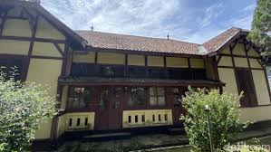

Rumah Budaya Banda
Mengunjungi pulau-pulau di Banda, tidak lengkap tanpa berkunjung ke satu-satunya bangunan unik ini. Jika biasanya rumah hanya merupakan tempat tinggal, rumah yang kali ini berbeda. Namanya Rumah Budaya, merupakan museum kecil yang berisi tentang info kepulauan Banda. Berlokasi di Pulau Banda Neira, Kepulauan Banda, Kabupaten Maluku Tengah, Maluku. Jika anda pecinta sejarah, lokasi ini adalah tempat yang tepat untuk dikunjungi.
Bangunan berasistektur Belanda ini merupakan milik keluarga Des Alwi, sejarawan yang berpengaruh untuk Banda Neira bahkan Indonesia. Beliau merupakan anak angkat dari Bung Hatta. Disini anda tidak hanya menemukan koleksi barang-barang yang belum pernah anda lihat di tempat lain, tetapi juga bisa menemukan berbagai cacatan sejarah penaklukan dan pendudukan Belanda dalam kata dan gambar.
Banyak hal unik disini, contohnya saja sejumlah lonceng dengan teks Belanda seperti: Spice Eaves dan lainnya yang berada di bagian belakang museum. Lonceng ini dibunyikan untuk memberi tahu para pekerja pala kapan harus memulai dan berhenti beraktifitas. Hal yang menarik lainnya yaitu lukisan yang berada di ruang utama museum dengan posisi tergantung. Itu adalah lukisan raksasa yang menceritakan pembantaian orang-orang terpandang di Banda tahun 1621. Ada juga beberapa lukisan lain dan semuanya duplikat karena yang asli berada di Belanda. Lukisan-lukisan itu memberikan gambaran yang jelas tentang kengerian yang telah terjadi di sekitar lokasi. Berbagai jenis meriam, alat musik, keramik Tiongkok, uang kuno serta benda lainnya juga turut mengisi kekosongan bangunan ini.
Selain sejarah yang menyedihkan itu, juga banyak yang bisa ditemukan tentang tradisi budaya kuno yang masih hidup. Seperti tarian perang Cakalele yang dilakukan oleh anak laki-laki berpakaian dengan helm Portugis serta lomba perahu perang Kora-Kora. Walau benda di Rumah Budaya ini berdebu, tapi sangat menarik dan sayang jika anda lewatkan
Terlepas dari kenyataan bahwa museum ini membutuhkan pembaharuan, bangunan ini merupakan warisan budaya yang harus dilestarikan. Cukup membayar dua puluh ribu saja sebagai retribusi masuuk dan uang perawatan. Penjelasan benda-benda dengan menggunakan bahasa Inggris juga disediakan dalam bentuk tulisan. Untuk jam bukanya sendiri, masih sedikit tidak teratur.
Rumah Budaya Bung Hatta
Rumah Pengasingan Bung Hatta merupakan tempat Mohammad Hatta menjalani hukuman pengasingan sebagai tahanan politik selama 6 tahun (1936–1942) di Banda Naira, kini di Kabupaten Maluku Tengah, Maluku. Ia bersama dengan tokoh nasional lain bernama Sutan Sjahrir juga diasingkan dekat rumah pengasingan Bung Hatta yang sekarang dikenal sebagai Rumah Pengasingan Bung Sjahrir.Pada tahun 2008, Kementerian Pendidikan dan Kebudayaan (Kemdikbud) menetapkan bangunan Rumah Pengasingan Bung Hatta sebagai cagar budaya dari provinsi Maluku dengan SK Menteri Nomor PM.31/PW.007/MKP/2008. Sampai saat ini, bangunan bercat putih yang berlokasi di jalan dr. Rehatta di kawasan Nusantara ini telah menjadi museum sebagai objek wisata sejarah utama di Banda Naira.

Sejarah
Pada tanggal 11 Februari 1936, Bung Hatta dan Bung Sjahrir tiba di pulau Banda Neira untuk diasingkan sebagai tahanan politik oleh pihak kolonial Belanda. Menurut pengakuan putri pertama Bung Hatta, Meutia Hatta menjelaskan alasan pihak kolonial Belanda sengaja mengasingkan mereka di tempat yang indah ini (Banda Neira) agar sikap mereka melunak pada pemerintah akan tetapi usaha itu gagal.Dikarenakan mereka belum mendapatkan rumah sebagai tempat tinggal disana, keduanya memutuskan untuk sementara tinggal di kediaman Iwa Koesoemasoemantri disana
Seminggu kemudian, mereka memutuskan untuk pindah ke rumah kosong dari seorang tuan tanah (perkenier) dengan harga sewa seharga f.12,50 (setara Rp 70.000) sebulan.Menurut penuturan putri kedua Bung Hatta, Gemala Hatta menuturkan bahwa rumah tersebut diberi harga murah karena sudah lama kosong dan berhantu tetapi ayahnya tidak ambil pusing dan tetap menyewa rumah tersebut.[5] Setelah beberapa bulan akhirnya Bung Sjahrir memutuskan untuk pisah dan tinggal di rumah yang tidak jauh dari rumah pengasingan Bung Hatta yang sekarang dikenal sebagai Rumah Pengasingan Bung Sjahrir. pada tahun 1944 bangunan rumah pengasingan ini dibangun ulang karena hancur dibom oleh sekutu pada masa Perang Dunia kedua.
Di tempat inilah keduanya bertemu dengan seorang tokoh yang nantinya menjadi sejarawan merangkap diplomat kebanggan Banda Neira bernama Des Alwi yang kala itu masih bersekolah kelas 2 di ELS (Europesche Lagere School). Karena kedekatannya, Des Alwi memanggil Bung Hatta dengan sebutan om kacamata dan Bung Sjahrir sampai akhirnya diangkat oleh mereka berdua sebagai anak dan disekolahkan sampai ke luar negeri. Sebelumnya, Bung Hatta diasingkan oleh pihak kolonial Belanda di Boven Digoel, Papua pada tahun 1935 selama setahun. Setelah enam tahun diasingkan disini, Bung Hatta bersama Bung Sjahrir kemudian diasingkan ke Rumah Pengasingan Hatta - Sjahrir di kota Sukabumi, Jawa Barat pada tanggal 1 Februari 1942 dalam rangka mempersiapkan proklamasi kemerdekaan Indonesia.
Masa pengasingan Bung Hatta dan Bung Sjahrir berakhir pada awal tahun 1942 ketika sebuah pesawat amfibi Catalina datang untuk menjemput mereka berdua. Ketika proses pengangkutan ternyata pesawat kelebihan beban, terpaksa akhirnya Bung Hatta merelakan dua peti buku ditinggal dan dititipkan kepada Des Alwi di Banda Neira.
Pada tahun 1972, setelah tidak lagi menjabat sebagai Wakil Presiden Republik Indonesia, Bung Hatta sempat kembali mengunjungi rumah ini. Ia disambut bagai anak asli dari pulau tersebut. Banyak pula warga yang menangis ketika Hatta pulang kembali ke Jakarta sama seperti ketika waktu Februari 1942 lalu ketika Bung Hatta dan Bung Sjahrir mengakhiri masa pengasingan di sana.
Awalnya rumah pengasingan ini dirawat oleh seorang laki-laki bernama Decky Baadila atas amanat dan bantuan dari Des Alwi yang kerap dipanggil Om Des oleh orang sana. Setelah Decky meninggal pada tahun 1984, tanggung jawab pemeliharaan rumah tersebut akhirnya jatuh pada adik kandung perempuannya yang bernama Emi Baadila yang kerap dipanggil Oma Emi dengan bantuan upah bulanan dari Balai Pelestarian Cagar Budaya Ternate sebagai biaya penunjang perawatan.